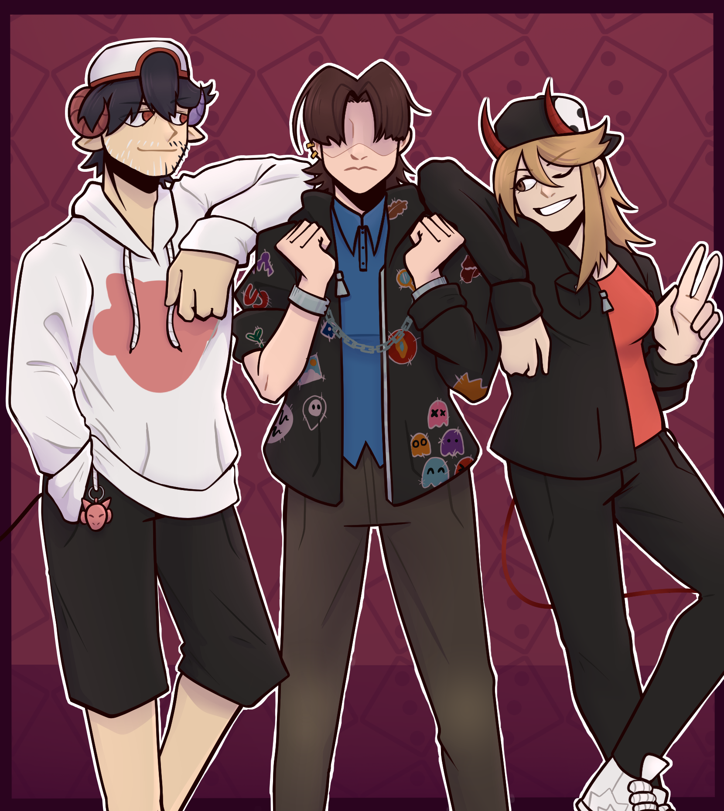
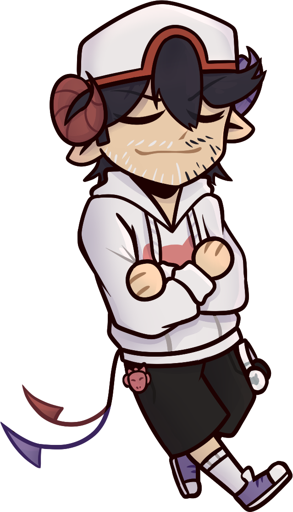

It's said the River Styx straddles the divide between the lands of the living and the dead.
Traversing its length, I hear bass-boosted bars ahead of me while, behind me, the living chase music and inspiration of all kinds.
Tonight, tomorrow, for days and weeks to come... worlds collide.
Alex is a typical slacker who's not really "going places," and even if he is, none of them are good. Tossed in jail one night after his friends ditch him during a dumb caper, he's approached by a mischievous demon with an interesting pitch: sell his soul, and she'll break him out. Not five minutes later, Alex is riding down the River Styx, the Underworld's newest denizen. What he doesn't realize is this isn't the end of his problems; it's only the beginning. He meets Karen, who goes by "Demondice," the Underworld's number-one fire-spitter and headliner at Satan's Rap Dungeon, and finds the Underworld is a pretty rowdy place, where bar fights and back-alley brawls are the norm. After some run-ins with Karen's demonic detractors, Alex is contacted by a mysterious individual threatening to expose a secret from his past, and he and Karen decide to team up. Also joined by Demon-chan, the supposed owner of Alex's sold soul, they head back to the land of the living, set to encounter new friends and foes alike - rockers and hip-hoppers, jazzy cats and idols.
Muses of Mayhem: The Demondice Visual Novel is a fan project created by River Styx Games, a team comprising fans of the alt-/J-rapper Demondice. It is a strictly not-for-profit adaptation featuring characters that are not intended to be accurate reflections of real-life persons or personalities. Put another way, this is all for fun, so don't take it too seriously. A lot of effort was put into this with little to no budget or material support, however, so it is our sincerest hope that everyone enjoys it. Do note River Styx Games and Muses of Mayhem are in no way affiliated with Demondice/Karen, her management or colleagues, or associated acts.
Download
Currently, this is the only place you can officially download the game. In the future, however, we plan to release it on platforms
such as itch.io, Steam and/or the Google Play Store. Until then, please download the game from here, and share the project with your
friends if you enjoy it!
Install
Installing and playing the game is easy! Just download the game from one of the two buttons above, right click the zip folder,
extract it, and run the file called Muses of Mayhem.exe. On some computers, the file may just be called
Musesof Mayhem, but either way, it should have an icon other than the standard Windows exe icon. Run that, and enjoy
the game!
Contact the Devs

Do you want to report a bug, ask a question or simply share your thoughts on this project? Please contact us, we want to hear from
you! You can message us at any of our socials, or email us directly at our team email,
RiverStyxGames@gmail.com. It may take us a little while to get back to
you, since we're all fairly busy people and we're working hard on the project.
Do you want to get involed? We may be
looking for people for certain roles, such as translator or beta tester, or even something as prominent as a background artist! If
you want to help, shoot us a message and we'll let you know if we need you!